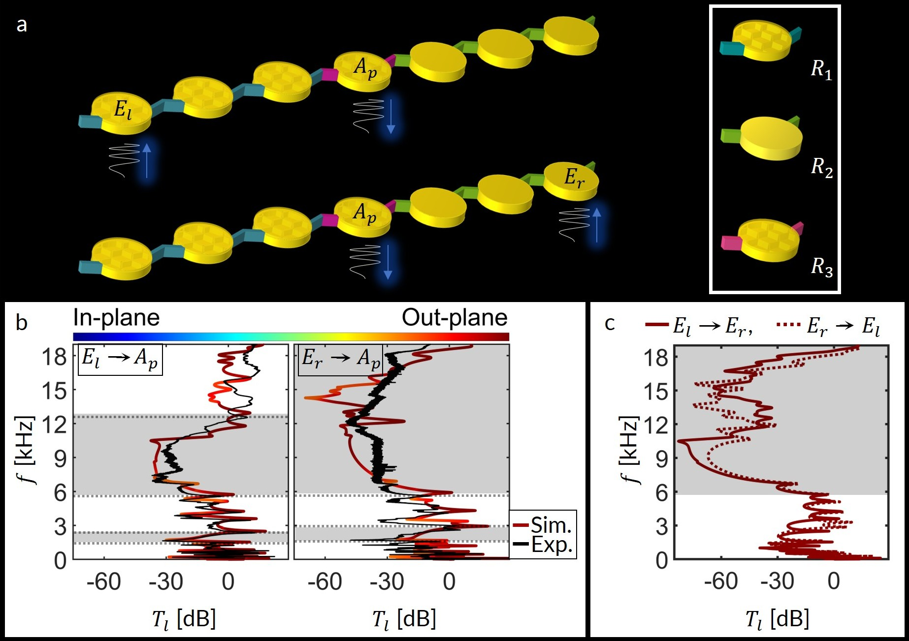

01 / PREDICT
Predictive wave engineering
Polymers are viscoelastic: they damp waves in a frequency-dependent way. I built a framework that combines measured material properties with geometry to reliably predict how elastic waves travel through 3D-printed metamaterials.
ViscoelasticityDMA · RheologyLDVCOMSOLMaterials Horizons 2026